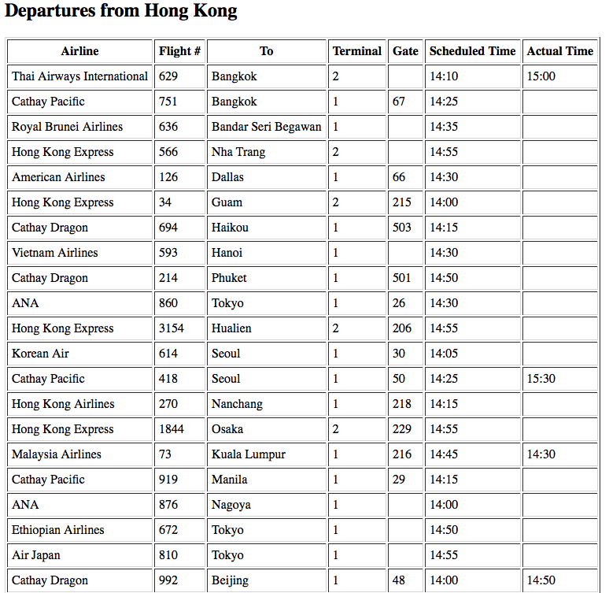

Complete Table of Flights
Creating a table with flights and their current status
The last step on the way to creating more realistic flight panels that you would expect to see in an airport, we need to add information like the updated flight status as well as gate and terminal information.
To accomplish this, we can use the FlightStats flightstatus API. The documentation is found here.
The format of the API call is api.flightstats.com/flex/flightstatus/rest/v2/json/airport/status/{airport}/dep/{year}/{month}/{day}/{hourOfDay}/?appId={}&appKey={}&numHours={}
There is a lot of information in this call, but it all is just an extension of the previous section. Let's break down the sections:
{airport}: The 3 letter airport code.dep: Departures.{year}/{month}/{day}/{hourOfDay}: The selected date and time of day.numHours={}: The number of hours of data to display, up to maximum of 6 hours.
The updated JavaScript code for the simple web interface contains a lot of changes.
Starting with the HTML section, a dropdown selector for the number of hours of flight departures was added. The table to display the results was rearranged. First, the "From" column was removed and replaced with a header since the departure airport information is probably obvious if this screen was to appear at an airport. Several additional columns were added such as "Terminal", "Gate", and "Actual Time".
The JSON response for the flightstatus API is not always consistent. There are several elements that are occasionally not present. This can be a challenge in writing the code to parse the response. One way to get around this is to use the method obj.hasOwnProperty method to check whether or not a key is present in a JSON object. This inconsistent data structure first becomes an issue when trying to populate the "Terminal" field of the flight table. Most of the flight objects in the JSON response have this data, but some flights or airports do not. Therefore, using the hasOwnProperty method is necessary. The relavent code excerpt is shown here:
if (response.flightStatuses[i].hasOwnProperty("airportResources") && response.flightStatuses[i].airportResources.hasOwnProperty("departureTerminal")){
createRow(response.flightStatuses[i].airportResources.departureTerminal);
}
else createRow('');The other place where additional code is required to properly display the flight data is in the display of the updated flight status information. This field captures the most recent estimated flight departure time. As before, the object key may not be present in the JSON response object so a similar check as above is required. Additionally, if the field is present, the actual flight departure time is often the same as the scheduled time. The table would be very redundant and messy with so much information so an additional nested
if (response.flightStatuses[i].operationalTimes.hasOwnProperty("estimatedGateDeparture"))
{
var tempTime = response.flightStatuses[i].operationalTimes.estimatedGateDeparture.dateLocal;
if (tempTime != response.flightStatuses[i].departureDate.dateLocal)
{
createRow(response.flightStatuses[i].operationalTimes.estimatedGateDeparture.dateLocal.substring(11,16));
}
else createRow('');
}
else createRow('');The final departures flight board now looks like this:
